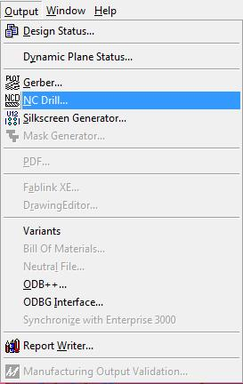
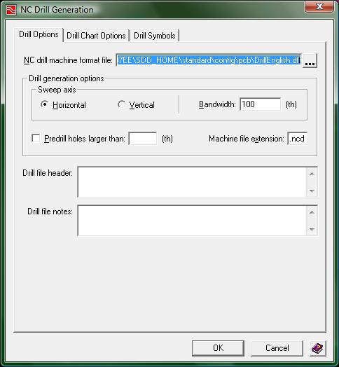

Drill Generation:
The drill generator is used to create a some plotted data that gets incorporated in a Gerber file for the board fabricator, and thus, this process must be completed before you can create a complete set of Gerber files. The drill generator information on the Gerber file includes how many holes and vias are present on the board as well as a legend mapping a small set of symbols representing each hole diameter for the board fabricator to use for visual verification.
In addition to this so-called "drill drawing" information, the drill generator writes a set of NC tool files that specify the drill locations and drill diameters for all of the holes on your board. It is critically important that every time you make a change to your board (for which a new set of Gerbers and silkscreen and NC drill files are needed) you will need to run this generator again.
To open up the drill generator, click the menu Output -> NC Drill…

(1-output_menu.jpg)
This will open up the following window

(2-drill_window.jpg)
The best part about this generator is that the default settings are set up properly for our ECE189 printed circuit board processing. To generate the information for the board fabricator, just press the "OK" button and Expedition PCB will generate the correct drill information.